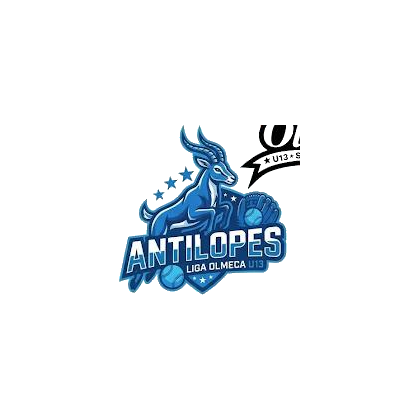
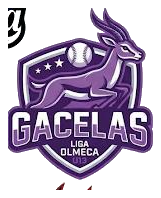
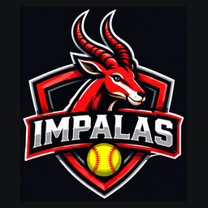

ANTÍLOPESLiga Olmeca U13

GACELASLiga Olmeca U13
LLAMASLiga Olmeca U13

IMPALASLiga Olmeca U13
Vista de trabajo interna. Contiene información individual de menores. No publicar este archivo ni sus datos en un repositorio público. Los acumulados por corte no se suman entre sí.
Producción ofensiva por equipo
Carreras anotadas acumuladas por equipo, corte 07NOV26.
Posiciones oficiales · 07NOV26
Tabla transcrita de la fuente oficial de posiciones; no recalculada.
Indicadores colectivos acumulados
Desempeño por equipo
Cifras colectivas del corte 07NOV26.
Padrón y expedientes individuales
Selecciona una jugadora para ver bateo, pitcheo, fildeo y evolución histórica disponible.
Catálogo maestro de rosters U13
Padrón oficial de temporada 2026–2027 · orden alfabético por apellidos · información privada.
Evolución acumulada por cortes
Los archivos representan acumulados a la fecha. La diferencia entre cortes muestra el incremento del periodo; AVG, PCL y WHIP deben recalcularse, no restarse.
Turnos al bat acumulados por equipo
Historial de registros por jugadora
Control de conciliación
Las coincidencias de confianza media requieren validación humana. Las referencias pendientes no se asignan por suposición.